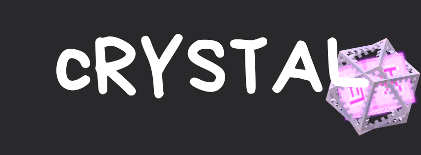

Al menos un stack de obsidiana, cristales del End, nexos de reaparición y bloques de piedra luminosa (glowstone) como tus armas principales.
Lleva tantos tótems de la inmortalidad (totems of undying) como puedas, ya que serán tu método principal para mantenerte con vida.
Un ballesta con Perforación (Piercing) o Disparo Múltiple (Multishot) con flechas con efecto de Caída Lenta (Slow Falling) para dificultar que tu oponente busque terreno bajo. También se pueden usar flechas de Debilidad (Weakness) para evitar que el rival detone cristales con el puño, siempre y cuando no tenga el efecto de Fuerza II activo.
En lugar de Protección IV en tus pantalones, se prefiere Protección contra Explosiones IV (Blast Protection IV) en el Crystal PvP. Siempre puedes llevar unos pantalones con Protección IV en tu inventario o cofre de Ender como respaldo en caso de que termines en una pelea de espadas.
Los cristales del End se pueden colocar sobre bloques de obsidiana o piedra base (bedrock) haciendo clic derecho sobre ellos con el cristal en la mano. Cualquier tipo de daño hará explotar el cristal, infligiendo un daño que puede ser bloqueado con un escudo. El daño del cristal del End es significativamente mayor si tus piernas están al mismo nivel Y o en uno superior que el cristal. Tampoco es posible colocar un cristal si su caja de colisión (hitbox) entra en conflicto con la de otra entidad, como otro jugador u un objeto tirado en el suelo.
Los nexos de reaparición se pueden colocar en el Overworld o en el End, y luego se cargan con 1 a 4 bloques de piedra luminosa (la cantidad de carga no influye en el daño). Una vez cargados, se pueden activar haciendo clic derecho sobre ellos, infligiendo daño de la misma manera que un cristal del End y creando un cráter grande y en llamas.
El Crystal PvP se basa por completo en estar a una altura más baja que tu oponente y detonar tus explosivos de modo que les hagan mucho más daño a ellos que a ti.
Consiste en dejarse caer desde una plataforma en la que ambos estaban, colocar una obsidiana abajo y spamear cristales en ella.
Golpear a tu oponente, colocar inmediatamente una obsidiana y spamear cristales en ella mientras el rival está en el aire. Lo ideal es usar una espada encantada con Empuje I (Knockback 1) para golpear al oponente.
Colocar un nexo de reaparición frente a ti y poner cualquier bloque en medio (entre tú y el nexo). Eso protegerá tus piernas del daño de la explosión, pero aun así dañará a tu oponente.
Si hay un bloque de obsidiana debajo o alrededor de ti donde te puedan meter un cristal, es una buena idea cubrirlo rápidamente con otros bloques para que no puedan colocar cristales de End sobre esa obsidiana.
Golpear a tu oponente con una espada y, de inmediato, colocar una obsidiana y explotar un cristal. Justo cuando el oponente deje de parpadear en rojo (terminando su tiempo de inmunidad), explota un segundo cristal para romperle dos tótems seguidos (double-pop). Esto mata instantáneamente a cualquier jugador que solo tenga un tótem en la mano. Sin embargo, requiere un timing estratégico, ya que el segundo cristal no puede explotar ni demasiado pronto ni demasiado tarde.
Básicamente, consiste en tener listos dos tótems para evitar morir por un double-tap. Puedes asignar una casilla de tu barra de acceso rápido (hotbar) para un tótem y configurar un acceso rápido (hotkey) para esa casilla. Justo cuando sientas que te van a romper el tótem, cambia tu mano principal a ese tótem de la hotbar presionando la tecla asignada.
Después de lanzar una perla de Ender y teletransportarte, recibirás un tic de daño (damage tick), durante el cual tus oponentes no podrán infligirte empuje (knockback). Al aprovechar esto, puedes evitar que tu rival te golpee. Puede usarse como mecanismo defensivo, o bien para realizar instantáneamente un hit crystal a tu oponente. Si tu rival te hace un face-place, recuerda lanzar una perla directamente a tus pies para no quedar atrapado en la explosión del cristal.
Colocar una obsidiana justo enfrente de ti y spamear cristales. Esto sirve para contrarrestar el pearl flash, ya que los cristales pueden interceptar la perla entrante del oponente, lo que usualmente lo desorienta (y a veces puede llegar a romperle un tótem directamente).
Cuando te rompen un tótem (pop), necesitarás reponerlo rápidamente en tu barra de acceso rápido o en tu mano secundaria (offhand). Esto requiere abrir el inventario, pasar el cursor rápidamente sobre un tótem y presionar de inmediato la tecla de la mano secundaria o la de la casilla de la hotbar. (Por ejemplo, si tu tecla para cambiar a la mano secundaria es la "F", pasa el cursor sobre el tótem y presiona F; si tu casilla para el tótem de la hotbar es la "V", pasa el cursor sobre el tótem y presiona V). Para que este proceso sea lo más rápido y preciso posible, debes acomodar todos tus tótems alrededor del centro de tu inventario, lo que exige una buena gestión del mismo. Si tienes dificultades para reponer los tótems porque están demasiado lejos del centro, puedes retirarte temporalmente del combate para acomodar tu inventario.
Como se mencionó antes, puedes combinar el pearl flash y el hit crystal para realizar un ataque instantáneo. Para lograrlo, el primer paso es apuntar tu perla a los pies de tu oponente y lanzarla. Luego, empieza a hacer clic por segundo (spam click) inmediatamente mientras tu mira apunta en la dirección general del rival. Esto te permite golpear instantáneamente al oponente hacia el aire justo en el momento en que tu perla aterriza a su lado, ejecutando un hit crystal o un double tap de manera inmediata.

| MAZO |